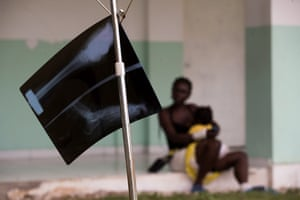

Earthquake relief efforts under way in Haiti – in pictures
Shipments of aid from many countries have been arriving in the south-western Tiburon peninsula of Haiti, which was struck by a 7.2 magnitude earthquake on 14 August
Pejman Faratin
Main image:
People reach for water during a food distribution in the Picot neighborhood of Les Cayes.
Photograph: Matias Delacroix/AP
-
Workers unload food parcels delivered by ships from the Dominican Republic, as tensions rose on Saturday over a lack of aid to remote areas hardest hit by the quake
Photograph: Reuters

-
-
Haiti’s prime minister says the big challenge now is reconstruction
Photograph: Orlando Barría/EPA
 -
-
-